Firmware for the original Tracker
OpenTracker
New brains for your tracker. Pick one, flash it, make noise.
Stable · 2.x line
OpenTracker 2.2.6
One image with all of the 2.x line: 16 tracks, five synth engines (ACD, FAT, VAP, WTFM, PERC), stereo samples, Mini-format projects, USB Storage mode, live resampling, streaming from the card and colour themes. Use this one for real work.
Patches, themes, test songs and the manual
Release notes 2.2.6
OpenTracker 2.2.6
The current stable release of the 2.x line: an open, community firmware for the original Polyend Tracker. 2.x brings 16 tracks, three synth slots, stereo samples, Mini-format project files and USB Storage mode to the original hardware.
OpenTracker is not affiliated with, endorsed by or supported by Polyend.
Files
PolyendTrackerOTv226.ptf: the firmware image.OpenTracker-2.2.6-Patches.zip: the preset pack (82 patches: ACD 12, FAT 8, VAP 16, WTFM 30, PERC 16, the same as in 2.2.5). CopyPatches/to the root of the card and merge it with what is there.OpenTracker-2.2.6-Themes.zip: 12 example colour themes. Unzip it to the root of the card; the files land in/Themes.OpenTracker-2.2.6-Projects.zip: the test songs. Copy them to/Projectson the card.OpenTracker-2.2.6-Manual.pdf: the 2.x user manual for this release.SHA256SUMS: checksums of every file. Check them withsha256sum -c SHA256SUMS.
Install
- Back up your SD card.
- Copy
PolyendTrackerOTv226.ptfto/Firmwareon the card. Keep the file name as it is: the updater only takes names of exactly 24 characters. - Go to Config > Firmware update, select the image and confirm. If the screen stays dark after the update, press the power button once.
Going back: keep the stock 1.9.2 image in /Firmware and install it the same way. From a running OpenTracker you can also write its file name into /Firmware/ot_restore.txt and power-cycle. Keep only the image you want, plus stock, in /Firmware: the rear reset button installs a .ptf from that folder.
New in 2.2.6
- Pattern pads with one finger (GitHub issue #153): a short tap of F1 on its own keeps the pads on patterns. Press pads to pick patterns; tap F1 again, or press another screen button, to return the pads to notes. Play and Stop keep it. The current pattern's pad blinks, a queued pattern's pad is lit full, patterns with notes are dim. Holding F1 with a pad, an arrow or the encoder works as before.
- Resample, Place on (PR #149): tracks without notes in the current pattern are green, tracks with notes red (placing there mixes the take with them). From and Place on list tracks by their names.
- Radio stereo: Config > General > Radio stereo = On makes the built-in radio stereo, and the Sample Recorder records it as Radio ST. Off, the default, keeps it mono as on stock (cleaner on weak stations, half the memory). Rows after it in General move down by one.
- WAV files that peak past full scale: 32-bit float files often go above full scale when exported from a computer. Those samples are now clipped at full scale. Before, they wrapped around and the file played as harsh noise, in Preview and as an instrument.
Thanks to the testers for their reports.
New in 2.2.5
The Performance screen works as on stock 1.9.2, and its FX reach synth notes; shorter Performance names, note names (Sharps / Flats / Auto), synth release tails that follow the Track Mixer, and Sample Loader and Sample Playback fixes. See the 2.2.5 release.
If you are coming from 2.2.4 or earlier: the Performance screen
The Performance screen now works as on stock 1.9.2. If you used it in earlier 2.x releases:
- Every track starts with its FX off. Press and release a track's screen button to turn its FX on. A pad then reaches only the tracks you picked.
- A red label means FX on. Before, red meant off.
- The filters start from the instrument's own cutoff, not from an open filter. Saved performances with a filter column can sound different: High-pass on an instrument with an open filter is now nearly silent, as on stock.
The 2.x line
- 16 tracks: tracks 13-16 work like MIDI tracks.
- Three synth slots (S1-S3) with five engines of our own sound design: ACD, VAP, PERC, FAT and WTFM. FX columns A-F drive six macros; Volume drives macro 7. A shared pool of 4 voices by default (1-8 in Config).
- Projects in the Mini's format: 16-track patterns, the three synth slots and
.patchfiles. Older original-Tracker projects open as they are. - Stereo samples in one-shot, loop, slice and beat-slice modes.
- USB Storage mode: the SD card shows up as a drive on a computer (about 1 MB/s).
- Live resampling (contributed by syamajala): record the mix, one track or Line In into a new instrument while the pattern plays.
- Exports at 44.1 kHz, a CPU meter, and a voice limiter that only ever cuts synth voices.
Known limitations
- The synths follow the Mini's parameter sets, but the sound is our own design: close, not identical.
- The synth voice pool defaults to 4 because of the processor's speed.
- USB Storage mode: back up the card before first use. Linux systems without a desktop may need
partprobeor a re-plug to see the card. - Projects saved by 2.x use 16-track patterns. Stock firmware reads only tracks 1-8 of those patterns.
Preview · for testing
OpenTracker 3.0
Four flavours: the same firmware with a different set of synths and effects. Only one image is installed at a time. Switch whenever you like: your projects stay on the card.
Techno · IDM · Acid · Analog-style · FM · Drum synths · Dub echo · Tape · Chip
A preview for testing, not for real work. Back up your SD card first.
Techno
Concrete, strobes and a kick that doesn't stop: drums, acid, drive and a tempo-synced echo.
Built for the warehouse.
- Synths
- ACD, FAT, JU6, D-Type, T-Type
- Effects
- Dirt, BBD Chorus, Echo, Tape, Phaser
- File
- PolyendTrackerOTt300.ptf · 2.0 MB
- Patches
- Patches-techno-3.0.0.zip · 24.3 KB
- SHA256
- 28bde45dcafea9611f26ea75ad1a8b30d19cb69503cc7d6a8b795a04263f8c4d
- Build
- 3.0.0 preview · 2026-11-08 · all files
- Back up your SD card.
- Copy
PolyendTrackerOTt300.ptfto/Firmware. Keep the name. - Copy
PatchesfromPatches-techno-3.0.0.zipto the root of the card and merge it. - Config > Firmware update, select the image, confirm.
Inside Techno
- T-Type drums One patch is a whole kit: kick, snare, clap, three toms, rim, cowbell, hats, crash and ride, each drum with three Characters.
- Dirt Drive and bitcrush on the whole mix: four shapers, bits, sample rate, tone.
- Echo A dub echo locked to the song tempo, with ping-pong and duck.
- Acid and stabs ACD, FAT, JU6 and D-Type for basses, leads and chords.

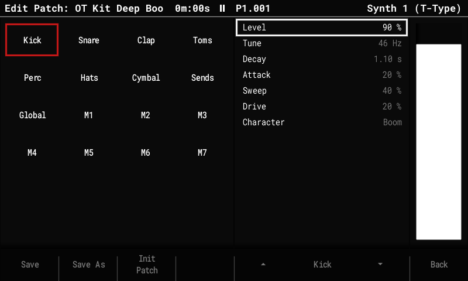

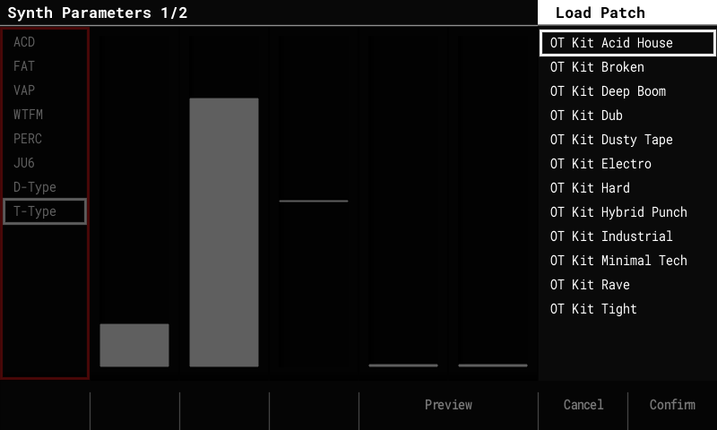

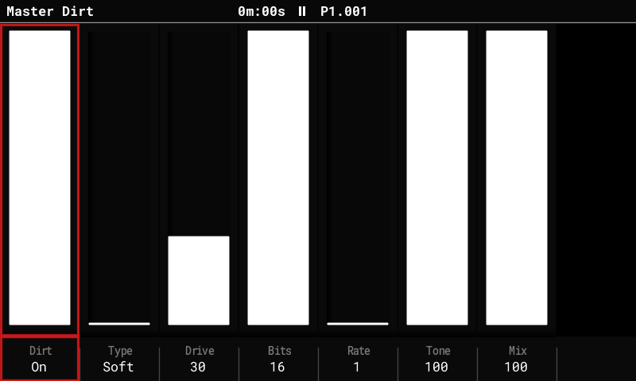

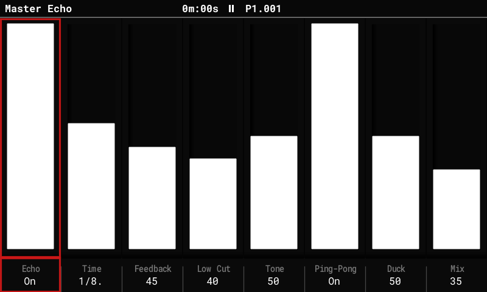
IDM
Broken grids and bent FM: wavetables, four-operator FM, drums and acid.
Built for the bedroom lab.
- Synths
- ACD, FAT, PERC, WTFM, FM4
- Effects
- Dirt, Chorus, BBD Chorus, Tape, Phaser
- File
- PolyendTrackerOTi300.ptf · 2.1 MB
- Patches
- Patches-idm-3.0.0.zip · 31.0 KB
- SHA256
- 37e32bf6d91182187499720963245aeb3ebf7fd091b71967a41f41667fd7a058
- Build
- 3.0.0 preview · 2026-11-08 · all files
- Back up your SD card.
- Copy
PolyendTrackerOTi300.ptfto/Firmware. Keep the name. - Copy
PatchesfromPatches-idm-3.0.0.zipto the root of the card and merge it. - Config > Firmware update, select the image, confirm.
Inside IDM
- WTFM Two-operator wavetable FM with three feedback paths: e-pianos, bells, mallets.
- FM4 Four operators, 8 algorithms, an envelope per operator.
- PERC A drum machine with one drum per note and tunable toms.
- Chorus and Tape A stereo chorus and a tape stage on the whole mix.

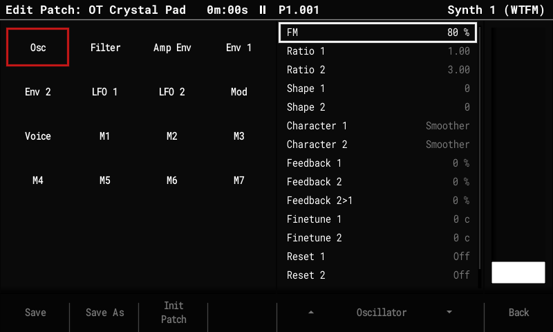

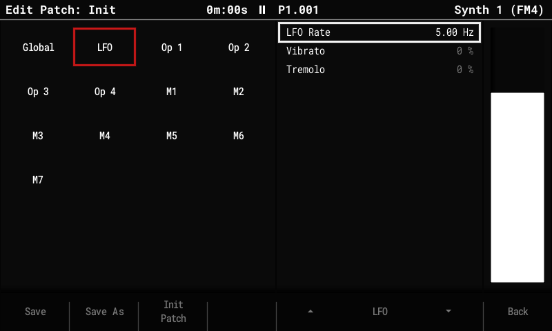

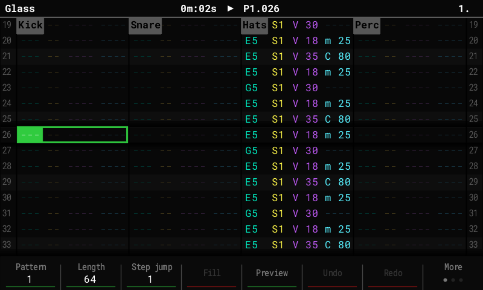
Classic
Warm and analog in style: poly pads, mono basses, duophonic leads and tape.
Built for the studio wall of knobs.
- Synths
- ACD, FAT, VAP, JU6, D-Type, CS-Type, A-Type
- Effects
- Dirt, BBD Chorus, Tape, Phaser, Tremolo, Bitcrush
- File
- PolyendTrackerOTa300.ptf · 2.1 MB
- Patches
- Patches-classic-3.0.0.zip · 49.0 KB
- SHA256
- 106dbe7a524586cdf32b65aaf3233abf5f740d46f28f52e6bdd62467a704303c
- Build
- 3.0.0 preview · 2026-11-08 · all files
- Back up your SD card.
- Copy
PolyendTrackerOTa300.ptfto/Firmware. Keep the name. - Copy
PatchesfromPatches-classic-3.0.0.zipto the root of the card and merge it. - Config > Firmware update, select the image, confirm.
Inside Classic
- CS-Type Two layers per note, each with its own filters and envelopes; Touch and Ribbon on the macros.
- A-Type Duophonic: two oscillators, hard sync, ring mod, sample & hold.
- D-Type Three oscillators into a filter that whistles on its own.
- JU6 A poly with a built-in stereo chorus, saved in every patch.

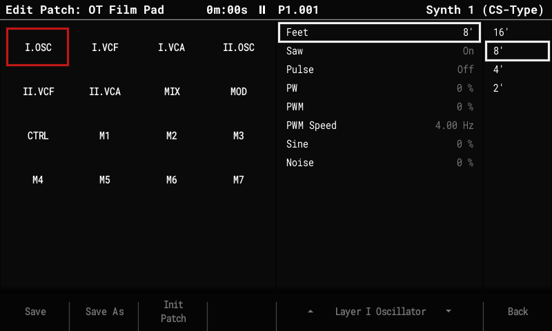

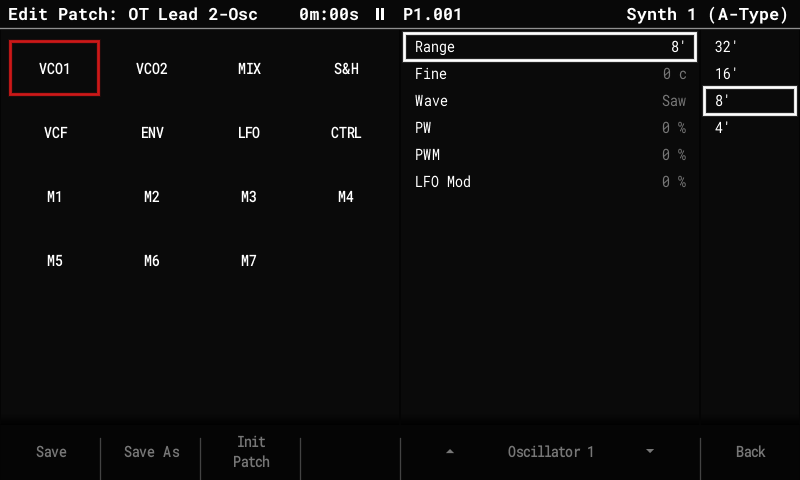

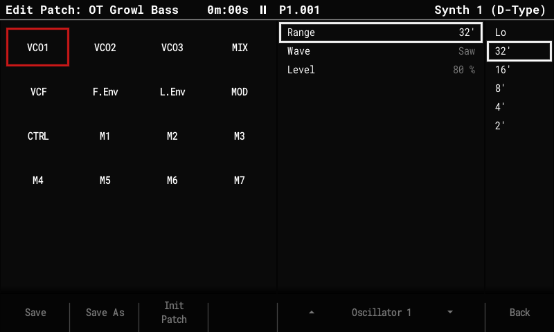
Retro
Blips, buzz and fast arps: four chip-style synths, a chip DAC on the mix and a tempo-synced echo.
Built for the arcade.
- Synths
- ACD, FAT, 8-Type, Hand-Type, B-Type, Arc-Type
- Effects
- LoFi, BBD Chorus, Echo, Tape, Phaser
- File
- PolyendTrackerOTr300.ptf · 2.1 MB
- Patches
- Patches-retro-3.0.0.zip · 33.1 KB
- SHA256
- 2aebdaf362c34a5f1223a194d5c8a65ca9d926813b1f71bdf5e8aac8bb70be90
- Build
- 3.0.0 preview · 2026-11-08 · all files
- Back up your SD card.
- Copy
PolyendTrackerOTr300.ptfto/Firmware. Keep the name. - Copy
PatchesfromPatches-retro-3.0.0.zipto the root of the card and merge it. - Config > Firmware update, select the image, confirm.
Inside Retro
- 8-Type Three oscillators with ring, sync and the combined waves into a 12 dB multimode filter: leads, basses, chords.
- Hand-Type Pulse with sweep, a 4-bit wave or noise, one channel per patch, or a whole drum kit by note.
- B-Type and Arc-Type Buzz tones from polynomial counters, and four-operator FM with looping envelopes.
- LoFi The mix through a small chip's output: bits, sample rate, uneven DAC steps and a speaker.

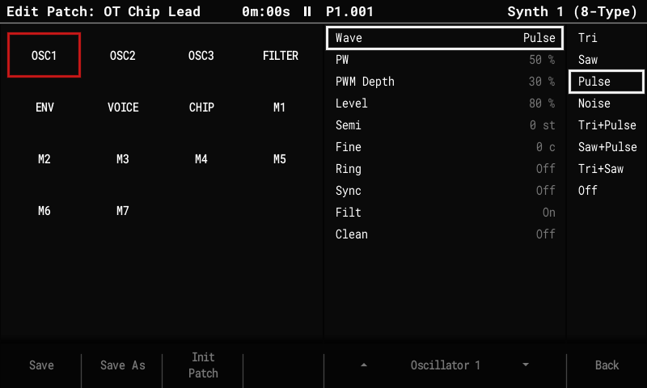

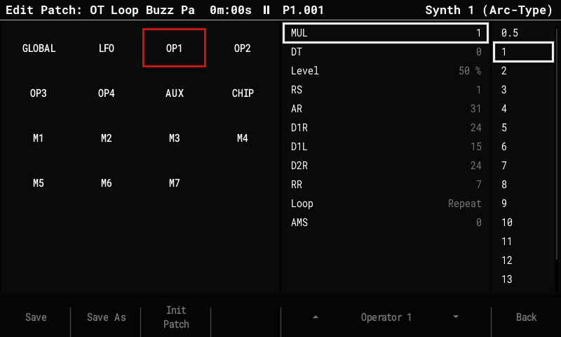

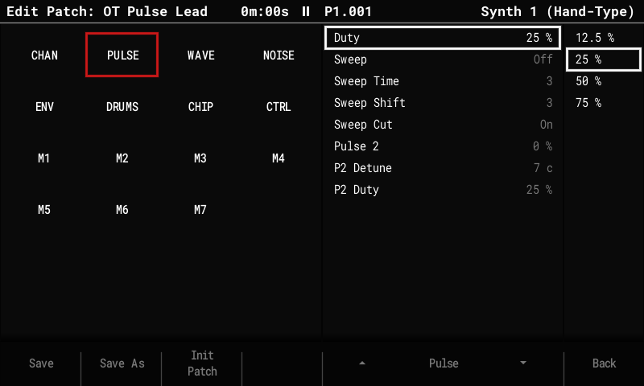

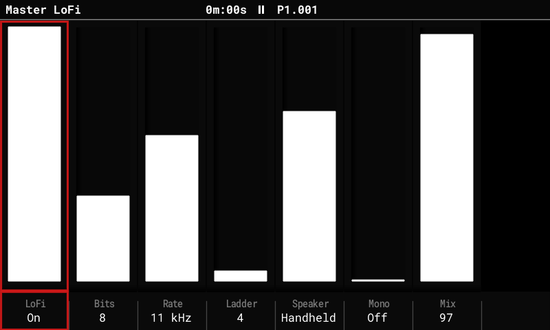
Compare the four images and find the one with the synths you want · Every synth and effect
Release notes 3.0.0 preview
OpenTracker 3.0.0 preview
An early test build of OpenTracker 3, for testing only, not for real work. Back up your SD card first, or use a spare card.
OpenTracker is not affiliated with, endorsed by or supported by Polyend.
Pick your image
OpenTracker 3 comes in four flavours: the same firmware with a different set of synths and effects. Only one image can be installed at a time.
- Classic
PolyendTrackerOTa300.ptf: ACD, FAT, VAP, JU6, D-Type, CS-Type, A-Type + Dirt, BBD Chorus, Tape, Phaser, Tremolo, Bitcrush. Analog-style synths: acid, poly pads, mono basses and leads. - IDM
PolyendTrackerOTi300.ptf: ACD, FAT, PERC, WTFM, FM4 + Dirt, Chorus, BBD Chorus, Tape, Phaser. FM, wavetable FM, drums and acid. - Techno
PolyendTrackerOTt300.ptf: ACD, FAT, JU6, D-Type, T-Type + Dirt, BBD Chorus, Echo, Tape, Phaser. T-Type drums, acid, basses and stabs, drive / bitcrush and a tempo-synced echo. - Retro
PolyendTrackerOTr300.ptf: ACD, FAT, 8-Type, Hand-Type, B-Type, Arc-Type + LoFi, BBD Chorus, Echo, Tape, Phaser. Chip-style synths: 8-bit computer and handheld voices, buzz tones, console FM and a chip DAC on the mix.
To switch, install another .ptf the same way: your projects and patches stay on the card. A project that uses a synth the image does not have opens fine, but that synth shows "not available" and stays silent until you install an image that has it.
Files
- The four
.ptfimages above. Patches-<flavour>-3.0.0.zip: the patches for the synths of that image. CopyPatches/to the root of the card.- The tester zip, when this release has one: the images, all their patches, a README with the full test list, and
PRESETS.md, which says what each patch is and what its macros do. OpenTracker-3.0.0-Manual.pdf: the user manual for 3.0. It covers what changed since 2.x.SHA256SUMS: checksums of every file. Check them withsha256sum -c SHA256SUMS.
Install
- Copy the image you picked to
/Firmwareon the SD card. Keep the file name as it is (24 characters). - Copy the
Patchesfolder to the root of the card. - Config > Firmware update, select the image and confirm. If the screen stays dark after the update, press the power button once.
- To go back, install the stock 1.9.2 image or OpenTracker 2.2.6 the same way.
What is new
- Four chip-style synths (Retro). Our own designs in the spirit of old sound chips. Pick them in the Synth page Model list after FAT. 12 patches each in
Patches/8TYPE/,HANDTYPE/,BTYPE/andARCTYPE/. - The CHIP section (Retro, Edit Patch on all four). Arp Mode (Oct, Maj, Min, Sus4, Dom7, Maj7, Min7, Dim, Aug, Pow5, Custom) plays a chord from one note by stepping the pitch very fast, at a fixed tick (50 to 120 Hz) or a note length of the song tempo; the note is not restarted, which is the old-computer chord sound. A stepped vibrato (Vib Rate / Depth / Delay) and Slide Start / Slide Time, which starts a note off pitch and slides it in.
- 8-Type synth (Retro). In the style of the 8-bit home computers of the early 1980s: three oscillators (Tri, Saw, Pulse with PWM, Noise and the combined waves) with Ring and Sync, a 12 dB multimode filter (16 resonance steps, Curve, Dirt), Grit for a small DAC. Leads at Poly 1, chords at Poly 3.
- Hand-Type synth (Retro). In the style of a 4-channel handheld console: one patch is one Channel: Pulse (four duties, a frequency Sweep, a second pulse), Wave (32 steps of 4 bits, built-in or your own) or Noise (15-bit or 7-bit), each with a stepped 4-bit envelope. Drums is a whole kit by note: play it at Poly 6.
- B-Type synth (Retro). In the style of the 8-bit computers with polynomial counters: the pitch comes from a Clock and a divider, with Tuning Free, Coarse (high notes go out of tune, on purpose) or Fine; Distortion picks the buzz (Pure, Poly4 to Poly5x9), and Hi-Pass gives thin, whistling tones. Play at Poly 1.
- Arc-Type synth (Retro). Four-operator FM in the style of the home consoles of the late 1980s: eight algorithms, feedback, envelopes that Loop (repeat, mirror or invert) for buzzing tracker sounds, a 9-bit DAC with a grainy Ladder setting and an Aux square or noise voice. Chords at Poly 4.
- LoFi (Retro). The whole mix through a small chip's output (Shift + Master; on Retro the order is LoFi, Echo, Tape): Bits 4 to 15, Rate 32 kHz down to 4 kHz, Ladder, Speaker (TV, Handheld, Monitor), Mono, Mix. It starts Off.
- T-Type drums (Techno). A new drum synth in the classic analog drum machine style. Pick it in the Synth page Model list and play it at Poly 1: one patch is one kit. Kick on C4, rim C#4, snare D4, clap D#4, hi-hats E4 (closed) to G4 (open), cowbell G#4, crash A4, ride A#4, toms from C3 to B3. Every drum has three Characters; the macros are Kick Decay, Hat Decay, Tune, Drive, Snappy and Accent. 12 kits.
- Dirt (Techno). Drive and bitcrush on the whole mix, on its own page next to the Master screen (Shift + Master): Type (Soft, Hard, Fold, Asym), Drive, Bits, Rate, Tone, Mix.
- Echo (Techno, Retro). A dub-style echo on the whole mix that follows the song tempo: Time 1/32 to 1/2 (dotted and triplet too), Feedback, Low Cut, Tone, Ping-Pong, Duck, Mix.
- A-Type synth (Classic). Two oscillators in the style of the semi-modular duophonic synths of the 1970s: saw or pulse with PWM, hard sync, ring modulator or noise, sample & hold, high-pass, a 24 dB or 12 dB low-pass, ADSR and AR envelopes, LFO and glide. Keyboard Duo and note Priority (Last, Low, High) at Poly 1. 12 patches.
- CS-Type synth (Classic). A polysynth in the style of the big two-layer polysynths of the late 1970s: every note plays two layers, each with its own oscillators, filters and envelopes; ring modulator, Brilliance and Resonance, Touch (macro 3) and Ribbon (macro 5). 12 patches.
- JU6 synth (Classic, Techno). A poly synth in the style of the classic early-1980s polysynths: saw and pulse with PWM, sub oscillator, noise, a 4-position high-pass, a resonant 24 dB low-pass, and a built-in stereo chorus (Off, I, II) saved in each patch. 12 patches.
- D-Type synth (Classic, Techno). A mono synth in the style of the classic three-oscillator synths of the 1970s: three oscillators, white or pink noise, mixer feedback for growl, a 24 dB low-pass that can self-oscillate, two contours, glide and a mod Wheel. Set Poly to 1. 12 patches.
- FM4 synth (IDM). Four-operator FM: 8 algorithms, feedback, an envelope per operator and an LFO.
- Tape (every image). A tape effect on the whole mix (Shift + Master): Drive, Wow, Flutter, Mix. It starts Off.
- Everything from 2.2.3: streaming from the card, colour themes, synth stereo and MIDI pitch bend.
New in the 9 November rebuild
- Synth presets and the Z FX (every image). Each project has 8 presets, P1-P8, shared by the three synth slots. A preset holds a patch of any model, with its insert, gain, pan, sends, polyphony and name. Z1-Z8 in a pattern switch a slot to a preset, Z0 back to its own patch. Open them from Synth Macros 2/2 > Presets (F8): Store, Load, Clear and hold-to-Preview.
- P1-P8 as instruments. Pick a preset in the Instrument popup after S1-S3 and play it with no Z, so one track can play several presets in turn. Each sound borrows one of the three synth slots, so at most three different sounds play at once.
- The song sounds the same wherever you start. Play from the middle starts each slot on the right preset, and while stopped the pads and MIDI play what the song plays at the cursor.
- Edit what you hear. While a slot plays a preset, the synth pages, Global Mixer and Synth Insert show and edit that preset, with P1-P8 in the title.
- New sample filter with flat passbands, exact tuning and rounded loud peaks. Existing songs that use the sample filter sound slightly different. Synth engines keep their own filters.
- Sample Playback: with Snap to zero off, a marker turns green when the wave crosses zero in the frames its position covers.
- Instrument Params from the Pattern screen: a synth step follows the same rule as a sample step.
- Paste between FX columns, and Stop cancels a queued pattern.
- Fixes for synth macros, arpeggio and spread.
- The manual is now part of the download.
New in the 6 November rebuild
- Three new synth inserts (Shift + Instrument Params on a synth slot): - Phaser (every image): Mode Off, Classic, 80s. Classic is a warm 4-stage sweep that lingers low and swoops up; 80s is a deep 8-stage phaser with stronger feedback and a wide stereo spread. Rate, Depth, Feedback, Spread, Mix. - Tremolo (Classic): Mode Off, Level, Pan, Both, Rate 0.1 to 20 Hz, Depth, Shape (Sine, Tri, Square with soft edges, no click). - Bitcrush (Classic): Shape Off, Hard, Soft, Crush (0 is clean, 12 is 4-bit), Down (sample-rate reduction), Mix.
- Switching back keeps the settings. Picking another insert and coming back to the first one brings back its settings and its Off, per synth slot (before, they went back to the defaults). A new or loaded project starts clean.
- F1 no longer switches an insert on. On the Synth Insert page, F1 selects the insert list; the wheel or the arrows pick the insert. Before, F1 pressed again stepped to the next one, so it was easy to switch an effect on by accident.
- WAV files that peak past full scale (common in 32-bit float exports) are clipped instead of wrapping around into harsh noise, in Preview and as instruments.
New in the 5 November rebuild
- Off in every synth insert. The first setting of an insert now starts with Off: Chorus Off, I, II, I+II, Drive Off, Soft, Hard, Fold, Asym. Off keeps the insert and its settings and stops the effect (no CPU); Delete on that setting turns it back on.
- Chorus no longer clicks when it comes on (picking Chorus as an insert, Off to I / II / I+II, and the BBD Chorus on the whole mix). The JU6 chorus has the fix too.
- Drive no longer thumps when its Type changes to Asym at a high Drive.
- JU6 Chorus has I+II (Classic, Techno): Off, I, II, I+II, as on the BBD Chorus. Contributed by idagani.
New in the 4 November rebuild
- Synth inserts (every image). Each synth slot S1-S3 can run its own effect before its fader, pan and sends: on a synth slot, Shift + Instrument Params opens Synth Insert. F1 selects the insert list (None, then the image's effects; the wheel or arrows pick), F2-F7 its settings (the wheel changes one, Delete sets it back), F8 or Instrument Params goes back. Changing the insert while notes sound fades the old one out first. The insert is saved in the project. - Chorus (every image): Mode I, II or I+II, Mix, Width, Tone. - Drive (Classic, IDM, Techno): Type, Drive, Tone, Mix.
- BBD Chorus on the whole mix (Shift + Master), now on every image, with a third mode, I+II. Switching modes no longer clicks.
- Dirt on the whole mix is now on Classic and IDM too.
- 35 new A-Type patches (Classic) made on the Tracker by Itay D: basses, brass, leads, pads, strings and plucks, in the Classic patch pack next to the 12 factory ones. The "12dB" ones are the same sound with the gentler 2-pole filter.
Fixed in the 2 November rebuild
- Performance works as on stock: tracks start with FX off, a red label means FX on, and the filters start from the instrument's own cutoff.
- Performance FX on synth notes: the LP / HP / BP filters move the synth patch's own cutoff, and Pan and the delay and reverb sends act per track on all 16 tracks. On synths without a filter (PERC, T-Type, FM4, Arc-Type, B-Type, Hand-Type) only pan and sends act.
Not in this build
- Some 2.2.4 to 2.2.6 features are not in 3.0 yet, among them piano pads and flat note names. The manual has the list.
- No image has every synth. A project that uses a missing synth opens, but that synth shows "not available" and stays silent. Don't use the preview on projects you need.
- CS-Type has no built-in chorus yet.
- After-touch from a MIDI keyboard does not reach Touch yet (use macro 3 or FX CC c).
- Games are removed in 3.x.
Please test
In short:
- Classic: A-Type Duo from two tracks, Low priority with a held bass, the sync sweep; CS-Type 4-note chords on two slots with the CPU meter on, Touch and every macro; JU6 chords and chorus, D-Type lines.
- IDM: your FM, WTFM and PERC projects; Chorus and Tape in a busy song.
- Techno: every T-Type kit with 16th hats, closed hat cutting an open hat, Volume FX ramps, two T-Type slots with the CPU meter on; Dirt, Echo with ping-pong during tempo changes, Echo Off with repeats; save, power-cycle and reopen.
- Retro: every patch with its macros both ways; the CHIP arp next to the step FX Arp, and a tempo-synced Arp Rate while the tempo changes; OT Kit Handheld at Poly 6 (a closed hat cuts the open one); OT Drop Kick on fast kicks; an 8-Type filter sweep; B-Type OT Coarse Lead in the top octave; OT Loop Buzz Pad at Poly 4 on two slots with the CPU meter on; LoFi over a whole song; save, power-cycle and reopen.
- Synth inserts: a Chorus or Phaser on all three synth slots in a busy song with the CPU meter on; Drive or Bitcrush on a bass; Phaser Classic against 80s; Tremolo Pan on a pad; change the insert and its first setting while notes sound (no click); set up an insert, switch to another and back (the settings stay); save, power-cycle and reopen (Off stays Off).
- Presets: Z on loops and song wraps, Play from the middle, P1-P8 with chords in a busy song with the CPU meter on.
- Any image: stuck notes.
Report what you used, what you did, what you expected and what happened (a photo or a short video helps) on the issue tracker.
Before you flash
Install, go back, start
Back up your card
Back up your SD card before you install anything, or use a spare one. Your projects, samples and patches stay on the card whichever image you install.
How to install
- Back up your SD card, or use a spare one.
- Copy the
.ptffile to/Firmwareon the card. Keep the file name exactly as it is: the updater only takes names of 24 characters. - Copy the
Patchesfolder from the patch zip to the root of the card, and merge it with what is there. - Put the card in the Tracker and go to Config > Firmware update. Select the image and confirm.
- If the screen stays dark after the update, press the power button once.
Go back to stock, or recover
- Going back: keep the stock 1.9.2 image in
/Firmwareand install it the same way, from the update menu. - From a running OpenTracker: write the file name of the image you want into
/Firmware/ot_restore.txtand power-cycle. OpenTracker hands over to the updater and installs it. - If the Tracker does not start: use the rear reset (recovery) button. It
installs a
.ptffrom/Firmware, so keep only the image you want, plus stock, in that folder. - Your projects, samples and patches stay on the card whichever image you install.
Switch between flavours
Only one image can be installed at a time. To switch, install another .ptf the
same way; your projects and patches stay on the card. A project that uses a synth the image does
not have still opens, but that synth shows “not available” and stays silent until you
install an image that has it.
Getting started
- Download your image. Techno, IDM, Classic or Retro for the 3.0 preview, or 2.2.6 for real work. Choose an image.
- Copy it to the SD card and update.
/Firmware, keep the name, then Config > Firmware update. How to install. - Get the patches, read the manual. Our own patches for every synth, and the 2.x manual. Patches and manual.
Try it in your browser coming later
We plan to build the simulator for the web, so you can play with each image in your browser before you flash it.